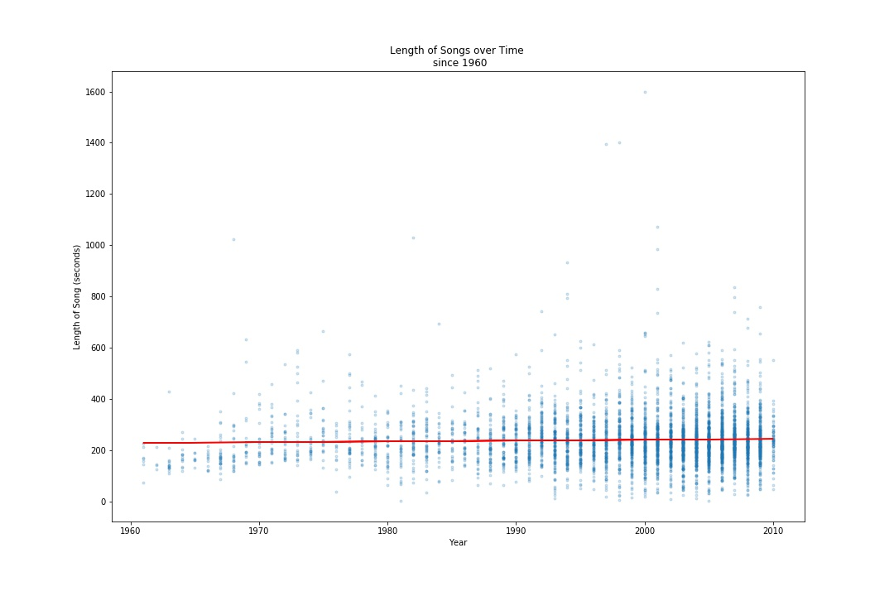
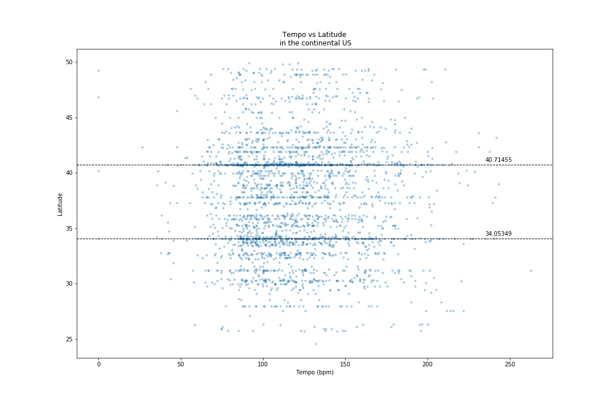
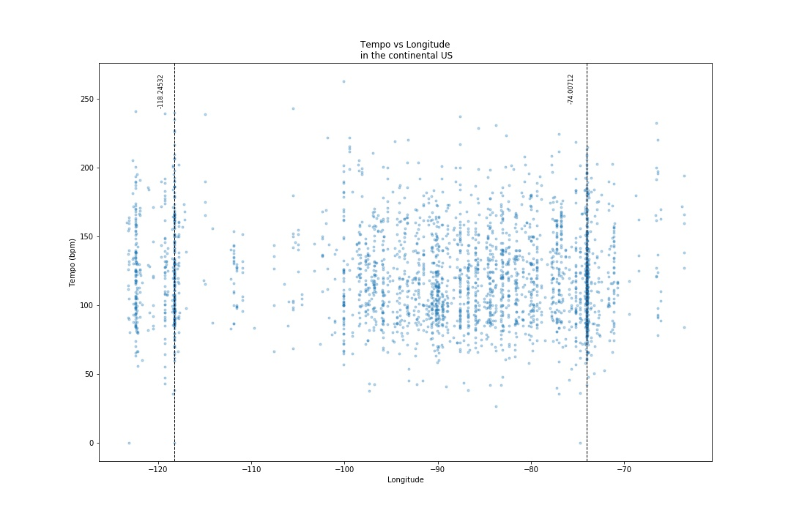

<!DOCTYPE html>
<html lang="en-us"></html>
    <head>
        <meta charset="utf-8">
        <meta name="viewport" content="width=device-width, initial-scale=1, shrink-to-fit=no">
        <title>
            Music to our ears: Song Length
        </title>
        <link rel="stylesheet" href="https://stackpath.bootstrapcdn.com/bootstrap/4.3.1/css/bootstrap.min.css" integrity="sha384-ggOyR0iXCbMQv3Xipma34MD+dH/1fQ784/j6cY/iJTQUOhcWr7x9JvoRxT2MZw1T" crossorigin="anonymous">
        <link rel="stylesheet" href="formatting.css">
      </head>

    <!-- Navigation bar using LUX from Bootswatch -->
    <nav class="navbar navbar-expand-lg navbar-dark bg-dark">
        <a class="navbar-brand" href="landing.html">Homework 11</a>
      
        <div class="collapse navbar-collapse" id="navbarColor02">
          <ul class="navbar-nav mr-auto">
            <li class="nav-item active">
              <a class="nav-link" href="landing.html">Home <span class="sr-only">(current)</span></a>
            </li>

            <li class="nav-item">
              <a class="nav-link" href="comparisons.html">Plots</a>
            </li>
<!-- change color formatting -->
            <div class="btn-group" role="group" aria-label="Button group with nested dropdown">
                <button id="btnGroupDrop1" type="button" class="btn btn-primary dropdown-toggle" data-toggle="dropdown" aria-haspopup="true" aria-expanded="false"></button>
                <div class="dropdown-menu" aria-labelledby="btnGroupDrop1" x-placement="bottom-start" style="position: absolute; will-change: transform; top: 0px; left: 0px; transform: translate3d(0px, 48px, 0px);">
                  <a class="dropdown-item" href="visualization1.html">Year vs Duration</a>
                  <a class="dropdown-item" href="visualization2.html">Year vs Loudness</a>
                  <a class="dropdown-item" href="visualization3.html">North vs South</a>
                  <a class="dropdown-item" href="visualization4.html">West vs East</a>
                </div>
              </div>

            <li class="nav-item">
              <a class="nav-link" href="comparisons.html">Comparisons</a>
            </li>
            <li class="nav-item">
              <a class="nav-link" href="data.html">Data</a>
            </li>
          </ul>
        </div>
    </nav>

    <body style="background-color:rgb(252, 252, 252)">
        <div class="container-fluid">
          <!-- main plot -->
          <div class="row">
            <div class= "col-md-7  main_info">
              <br>
              <h2  class="main_header">North vs South</h1>
              <br>
                <p >
                  America's regional cultures are defined in many ways. Here we look at the North vs the South. Narrowing the data set to 
                  latitudes within the continental US, we asked if song tempo refleectedthe sterotype of the North being fast-paced and the
                   South having a leisurely pace. The dataset finds it not too different at all. There were two latitudes that stood out, 
                   40.71455 and 34.05349. 40.71455 is New York City which is no suprise for producing a large volume of music at any tempo.
                   34.05349 is Los Angeles, again being no surprise for high volume music production. New York does seem to produce more 
                   music at higher beats per minute (bpm) than Los Angeles. There is a great spread of music production all over the US.
                   It would be interesting to see if pop music is around 100 bpm as it seems the more frequest speed.
              </p>
              <br>
              
            </div>
            <!-- sidebar -->
            <div class= "col-md-4 mini_info">
              <h2 class="mini_header"> Graphic Evidence </h2>
              <div class="row">
                <div class="col-md-6">
                  <h6>Year vs Duration</h6>
                  <a href="visualization1.html"> 
                      
                  </a>
                </div>
                <div class="col-md-6">
                  <h6>Year vs Loudness</h6>
                  <a href="visualization1.html"> 
                      
                  </a>
                </div>
                <div class="col-md-6">
                    <h6>North vs South</h6>
                    <a href="visualization1.html"> 
                        
                    </a>
                </div>
                <div class="col-md-6">
                    <h6>West vs East</h6>
                    <a href="visualization1.html"> 
                        
                    </a>
                </div>
            </div>
          </div>
        </div>
      </div>

    <script src="https://code.jquery.com/jquery-3.3.1.slim.min.js" integrity="sha384-q8i/X+965DzO0rT7abK41JStQIAqVgRVzpbzo5smXKp4YfRvH+8abtTE1Pi6jizo" crossorigin="anonymous"></script>
    <script src="https://cdnjs.cloudflare.com/ajax/libs/popper.js/1.14.7/umd/popper.min.js" integrity="sha384-UO2eT0CpHqdSJQ6hJty5KVphtPhzWj9WO1clHTMGa3JDZwrnQq4sF86dIHNDz0W1" crossorigin="anonymous"></script>
    <script src="https://stackpath.bootstrapcdn.com/bootstrap/4.3.1/js/bootstrap.min.js" integrity="sha384-JjSmVgyd0p3pXB1rRibZUAYoIIy6OrQ6VrjIEaFf/nJGzIxFDsf4x0xIM+B07jRM" crossorigin="anonymous"></script>
  </body>
</html>